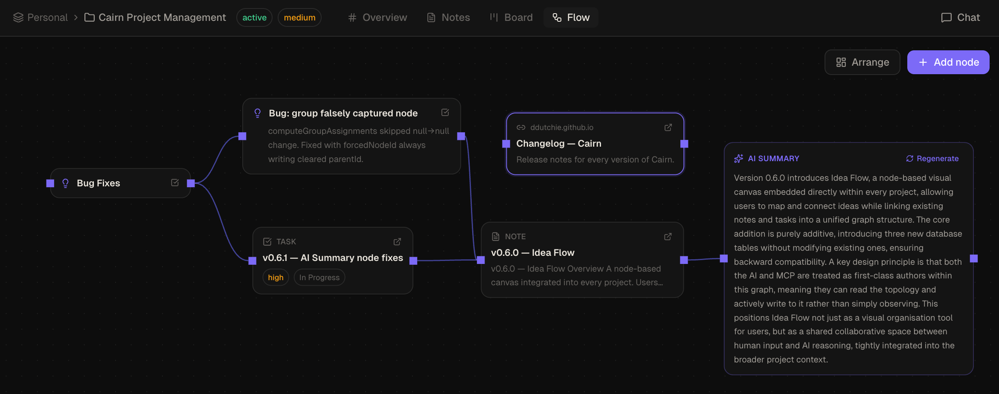
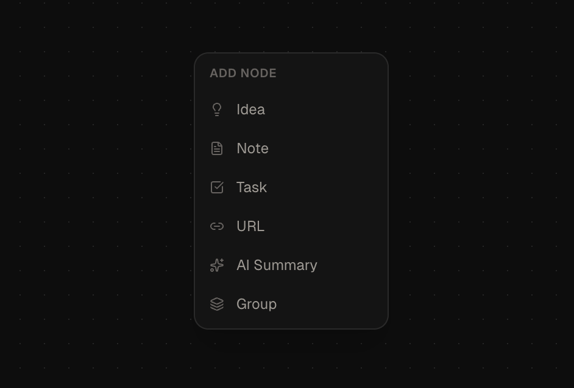

Idea Flow
A freeform canvas inside each project. Drag nodes, connect them with edges, and let the AI summarise any subgraph — without leaving Cairn.
What is Idea Flow?
Idea Flow is a per-project visual canvas that sits alongside the Notes and Board views. It gives you a place to think spatially — arranging ideas, linking them to existing notes and tasks, and exploring relationships before committing to structure.
Unlike a separate whiteboard tool, Idea Flow is connected to your workspace: note and task reference nodes are live links. Promoting an idea to a board task rewires the edges automatically. The AI can read and write the entire graph via chat or MCP.

Node types
| Type | Description |
|---|---|
idea |
A freeform text node — title and body. The default node type created by double-clicking the canvas. |
url |
A link node with a URL. Click the fetch button to pull Open Graph metadata (title, description, image) automatically. |
note_ref |
A reference to an existing note in the project. Click to open the note in the Notes view. |
task_ref |
A reference to an existing task card. Click to open the card in the Board view. |
group |
A colour-coded container. Drag nodes inside to nest them; drag the group to move all children together. |
ai_summary |
A read-only node generated by the AI. Summarises all upstream ancestor nodes in the connected subgraph. |
Opening Idea Flow
Select a project in the sidebar, then click Flow in the top project navigation tabs (alongside Overview, Notes, and Board).

Creating nodes
There are three ways to add a node:
- Double-click the canvas — creates an idea node at that position and opens it for editing immediately.
- Click the + button or right-click the canvas — opens a floating type picker with buttons for each node type: Idea, URL, Note ref, Task ref, AI Summary, Group.
- Drag from the sidebar — the Flow sidebar lists all notes and tasks in the current project. Drag any item onto the canvas to create a
note_refortask_refnode linked to that entity.
Connecting nodes
Hover a node to reveal connection handles on its edges. Drag from any handle to another node to create an edge. Edges can have an optional label — double-click an edge to add or edit it.
To delete an edge, select it and press Delete or Backspace.
Group nodes
Group nodes are colour-coded containers that help you organise related ideas spatially.
- Create a group via the type picker (+ button or right-click canvas → Group)
- Drag nodes into the group to nest them — they move with the group when it is dragged
- Drag a nested node outside the group boundary to release it
A node's group is determined by where it is dropped when created or dragged in. If you need to move a node into a group after the fact, drag it fully inside the group boundary and release.
AI Summary node
Add an AI Summary node via the type picker. Once placed on the canvas, the node shows a Generate button. Click it to summarise all nodes connected upstream via incoming edges. The AI walks all ancestor nodes transitively — not just direct neighbours.
- The node content is read-only — the AI generates and owns the text
- Click Regenerate on an existing AI Summary node to re-run the summary
- The traversal includes all node types — idea, URL, note_ref, task_ref, and nested group contents
Auto-layout
Click Arrange in the toolbar to auto-arrange all nodes using a left-to-right dagre layout. Positions are updated in place — group membership and edge connections are not affected.
Promoting an idea to a task
Each idea node has a Promote to task button on the card. Clicking it creates a new task card on the Board (in the Backlog column by default) and converts the node to a task_ref. All edges connected to the original idea node are re-wired to the new reference node automatically.
URL nodes and Open Graph metadata
When you create a url node and enter a URL, click the fetch button (the small arrow icon on the node) to retrieve Open Graph metadata. If the page returns an og:title, og:description, or og:image, the node updates to display them. The fetch runs once on demand — it does not auto-refresh.
URL metadata fetching requires an active internet connection. The request is made from the Cairn desktop process, not from a sandboxed iframe.
Keyboard shortcuts
| Shortcut | Action |
|---|---|
| Delete / Backspace | Delete selected nodes or edges |
| Escape | Deselect all |
| Cmd A | Select all nodes |
| Cmd Z | Undo |
| Cmd Shift Z | Redo |
Undo / Redo in Idea Flow
Idea Flow participates in the app-wide undo/redo stack. Node moves, edge creation, deletions, and content edits are all undoable with Cmd Z / Cmd Shift Z.
Note: history is cleared when the AI or an MCP client writes to the canvas. Use the chat to ask the AI to revert its own changes if needed.
MCP tool reference
The Cairn MCP server exposes 6 tools for reading and writing Idea Flow programmatically. All tools are available from the AI chat panel and from any external MCP client.
| Tool | Read / Write | Description |
|---|---|---|
get_idea_flow | Read | Returns the full canvas graph — all nodes and edges — with note and task content resolved inline so the AI gets a self-contained picture |
create_idea_flow_node | Write | Add a new node to the canvas. Specify type, position (x, y), and type-specific data. Optional parentId to nest inside a group. |
update_idea_flow_node | Write | Update a node's data fields or canvas position. Only provided fields are changed; data is merged, not replaced. |
delete_idea_flow_node | Write | Remove a node from the canvas. All edges connected to that node are also deleted. |
create_idea_flow_edge | Write | Connect two nodes with an optional label. |
delete_idea_flow_edge | Write | Remove a connection between two nodes. |
layout_idea_flow | Write | Auto-arrange all nodes using a left-to-right dagre layout. |
When an MCP client writes to the Idea Flow, the Cairn app detects the change via WAL polling and re-fetches the canvas within milliseconds — no restart or manual refresh required.